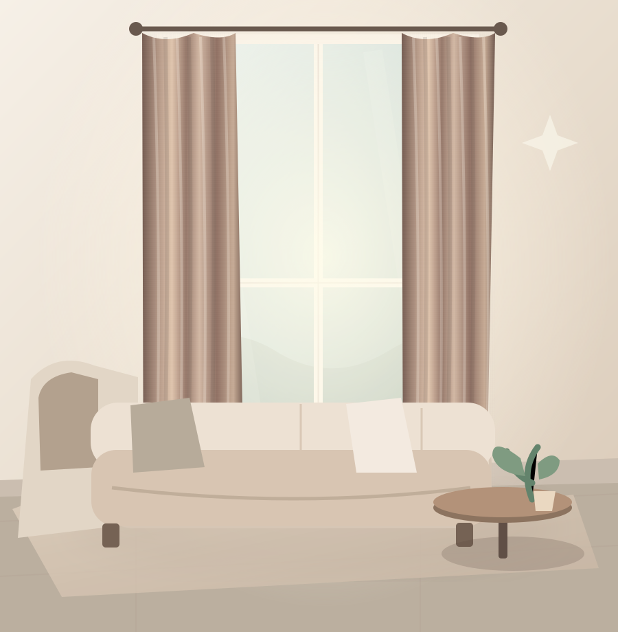
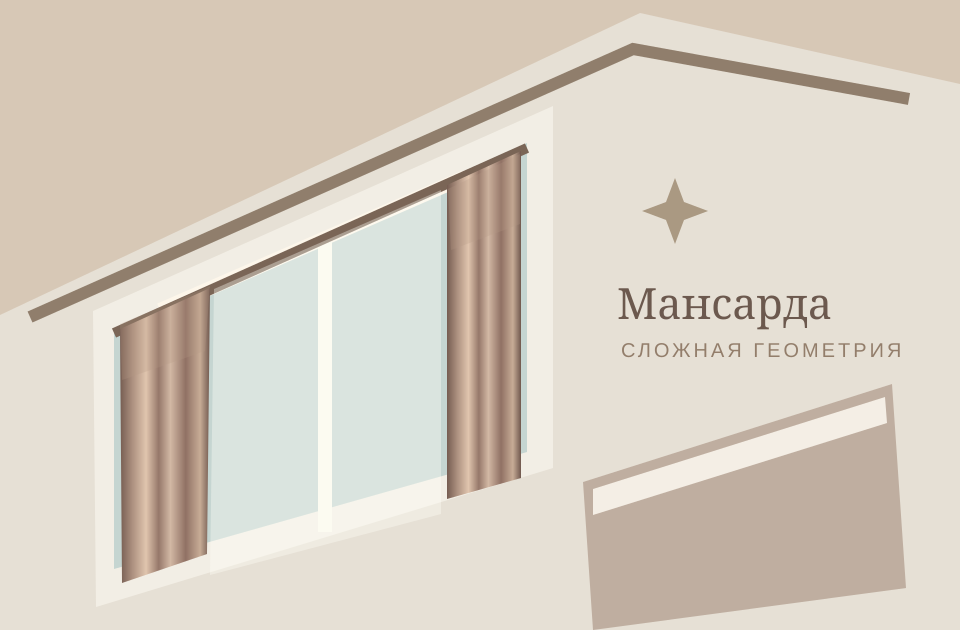

У вашего дома
есть свой
характер.
Создаём оформление окон, которое становится частью интерьера. Шторы на заказ, ткани, карнизы и детали, из которых складывается уют.
От идеи до готового оформленияКонсультация, подбор, пошив и установка

От классических проёмов до мансарды
Выбор фактуры, плотности и оттенка
Оформление, пошив и карнизы
Каждое окно —
своя история.
Идеи оформления для разных комнат и нестандартных окон. Авторские иллюстрации показывают направление дизайна; настоящие работы студии смотрите в её VK.
Фотографии студии в VK
АВТОРСКАЯ СХЕМА · НЕ ФОТО ЗАКАЗАКрасивое решение
для сложных окон.
Оформление второго этажа частного дома с мансардной крышей — реальный проект, о котором студия рассказала в своём сообществе.
В описании упомянуты профильные карнизы, тюль, портьеры со скосом на ручной складке и ткань шенилл-блэкаут. Для таких окон особенно важно продумать геометрию и крепления.
Все детали
единого интерьера.
От едва заметного тюля до выразительных портьер и системы карнизов — каждый элемент работает на ощущение дома.
Дизайн и пошив штор
Оформление под размеры и стиль вашего пространства, включая сложные формы окон.
Обсудить оформление ПОДБОР ДЕТАЛЕЙТкани и фактуры
От воздушного тюля до плотных портьер: выбираем тактильность и характер.
Познакомиться с тканями ФУНКЦИОНАЛЬНЫЙ ДЕКОРКарнизы и монтаж
Профильные, декоративные, римские и электрические системы — по задаче и интерьеру.
Смотреть решения УЮТ В ДЕТАЛЯХДомашний текстиль
Покрывала, декоративные подушки и другие текстильные акценты для дома.
Уточнить ассортиментПримерьте настроение
своему окну.
Поиграйте с формой и оттенком штор. Мы соберём параметры в готовое сообщение для дизайнера — без выдуманных цен и без отправки данных на сервер.
Что вы представляете?
Текст заявки копируется в буфер. Фото остаётся только в браузере: его можно приложить в переписке самостоятельно. Сайт ничего не отправляет автоматически.
Ткани, которые
хочется трогать.
Плотные и воздушные, гладкие и фактурные. Знакомьтесь с типами тканей — конкретные коллекции и наличие уточняйте в салоне.
Образцы — авторская иллюстрация категорий ткани, не каталог фактических складских остатков студии.
Красота
держится на
деталях.
Карниз — не просто крепление. Он определяет движение ткани, аккуратность складок и удобство использования штор.
Лаконичное решение для ровных складок и нестандартной геометрии окон.
Всё начинается
с вашего окна.
Рабочий процесс, который помогает согласовать дизайн, ткань и установку. Конкретные сроки и стоимость студия уточняет индивидуально.
Знакомство с задачей
Обсуждаем комнату, форму окон и то, какого настроения хочется добиться.
Ткани и визуализация
Подбираем оттенки, фактуры, плотность и подходящие варианты оформления.
Замер и согласование
Уточняем размеры, карнизы, особенности проёма и стоимость проекта.
Пошив и оформление
Согласованные изделия изготавливаются и устанавливаются по договорённости.
искусство деталей.
Шарм — это
про дом.
Салон в Липецке, где помогают подбирать ткани, оформлять окна, проектировать карнизы и дополнять интерьер текстилем. В сообществе студии есть выполненные заказы, фотоотзывы и решения для нестандартных проёмов.
О студии говорят
клиенты.
Отзывы лучше читать в оригинальном источнике. Мы не сочиняем цитаты и не используем фотографии клиентов без согласия.
Остались
вопросы?
Это нормально: каждое окно и каждый интерьер немного отличаются. Вот что полезно знать перед первым обращением.
Спросить в VKКак узнать стоимость пошива штор?
Стоимость зависит от размеров окна, типа изделия, ткани, драпировки, карнизов и установки. Подготовьте параметры в конфигураторе и отправьте их студии для предварительной оценки.
Можно ли оформить мансардное окно со скосом?
В ноябре 2026 года студия опубликовала пример оформления комнат на мансардном этаже с портьерами со скосом и профильными карнизами. Возможность выполнения вашего проекта уточняется после обсуждения размеров.
Дизайнер может приехать с образцами тканей?
Выезд дизайнера с образцами указан среди предложений студии. Доступность, стоимость и условия согласуйте при записи.
Вы занимаетесь установкой карнизов?
В описании студии заявлены подбор и установка карнизов, а также навешивание штор. Ассортимент систем и возможность монтажа уточняются индивидуально.
Сколько занимает изготовление?
Срок зависит от материала, сложности пошива и загрузки ателье. Точный срок следует согласовать с представителем студии до оформления заказа.
Можно ли заказать готовые изделия и доставку?
Компания заявляет ассортимент готовых штор и доставку. Наличие выбранных изделий, регионы и текущие тарифы доставки уточняйте напрямую.
Ваш интерьер
ждёт свою деталь.
Расскажите, какие окна вы хотите оформить, или приходите в салон обсудить идеи и ткани.